Скрол анимация
Задание
Да се реализира анимация, в която при скрол с мишката, джапанката да се „разгъва“ на съставните ѝ части.
Анимацията се активира, когато елементът се появи в рамките на видимата част на екрана. Анимацията се получава чрез серия изображения. Изображениеята се редуват при скролиране, като се отчита посоката.
Алгоритъм
- Видимост на елемента: Анимацията се активира, когато елементът се появи в рамките на видимата част на екрана.
Преходът се получава чрез серия от изображения, които се редуват скролиране.
- Модифицира се стъпката на скрола. За да може анимацията да стартира и приключи,дкоато е видима на екрана.
- Отчитане посоката на скрол- отчита се посоката на скрола, за да може при скрол нагоре, джапанката да се "затваря", а при скрол надолу да се "отваря".
- Добавяне на стилове: CSS Класът active, се добавя на изображението ,което трябва да е да е видимо на екрана.
- Скролът се ресетва по подразбиране в случай, че анимацията е изпълнена.
Скролнете с мишката за да видите анимацията
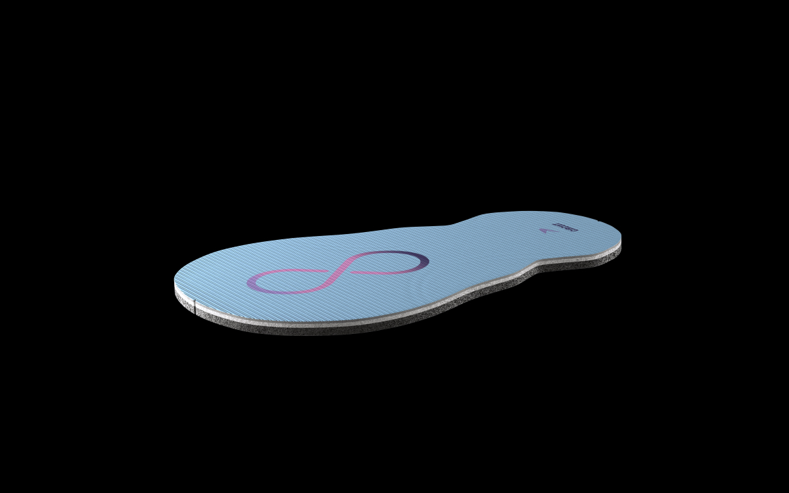
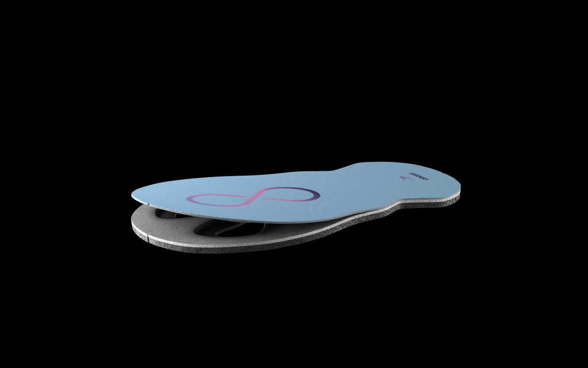
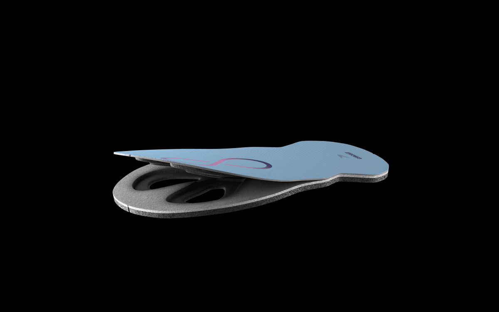
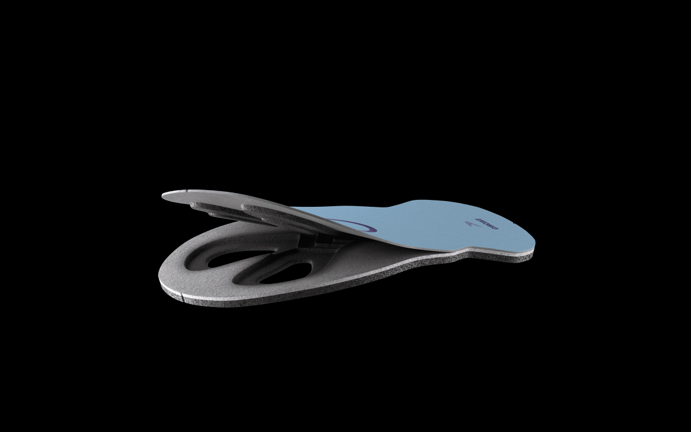
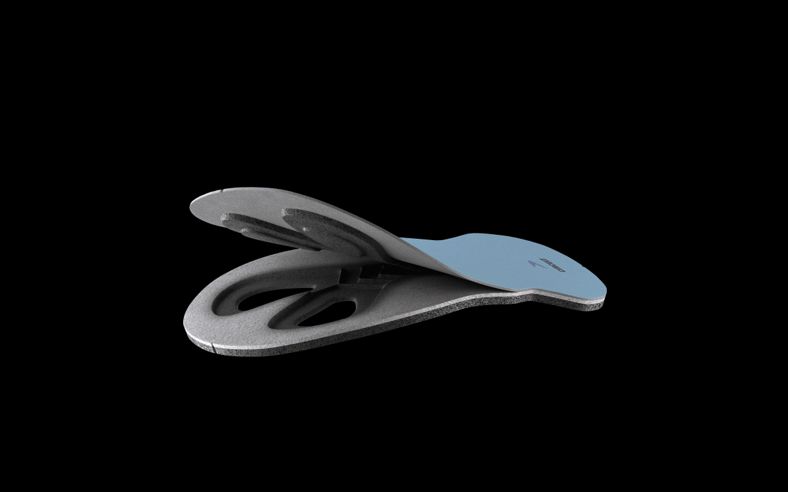
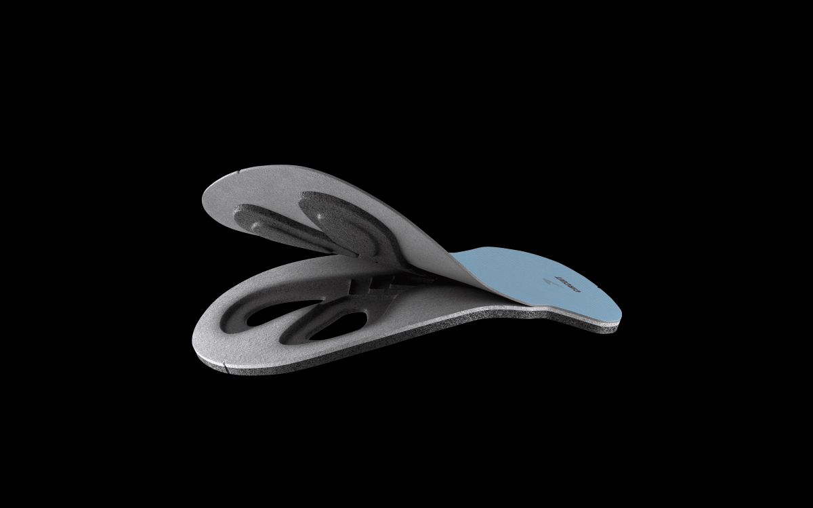
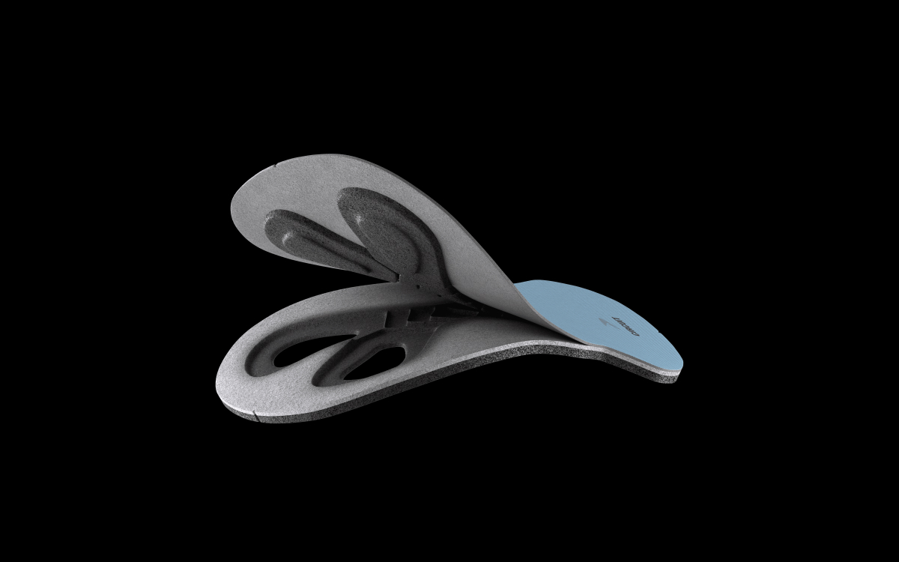
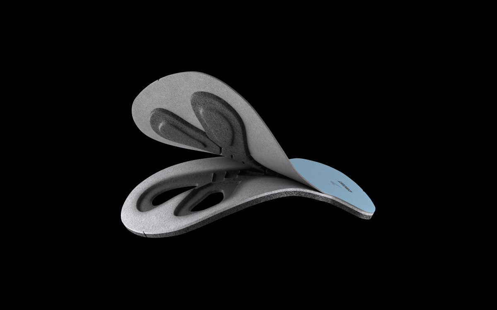
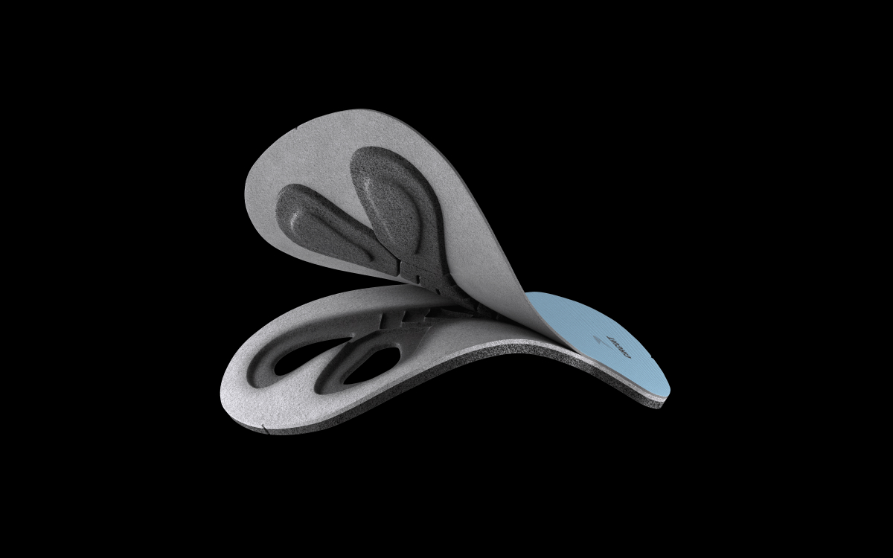
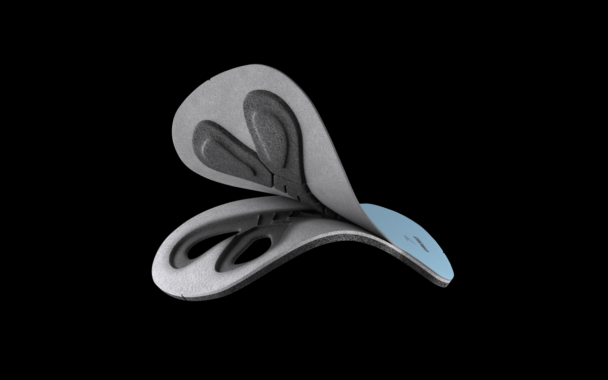
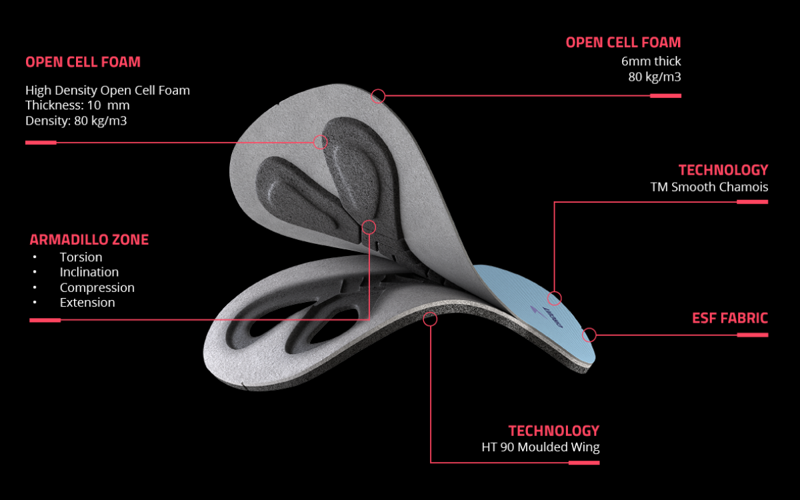
Основни аспекти на анимацията при скролиране
- Видимост на елемента: Анимацията може да се активира, когато елементът се появи в рамките на видимата част на екрана. Изображението може постепенно да се променя при скролиране. Джапанката се отваря при скрол надолу и затваря при скрол нагоре.
- Позициониране и движение: Елементите могат да се движат, променят позицията или размера си в зависимост от позицията на скролиране. Например, текст или изображения могат плавно да се преместят нагоре, надолу или наляво.
- Промяна на стилове: Визуалните промени, като промяна на цвят, размер, форма или други CSS свойства, могат да се случват в зависимост от текущата позиция на скролиране.